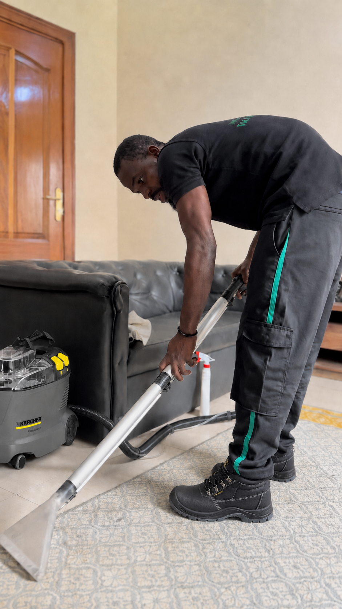
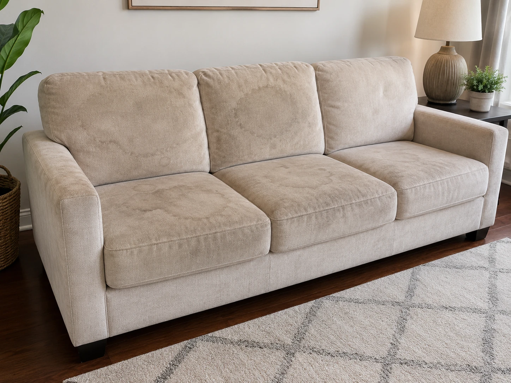
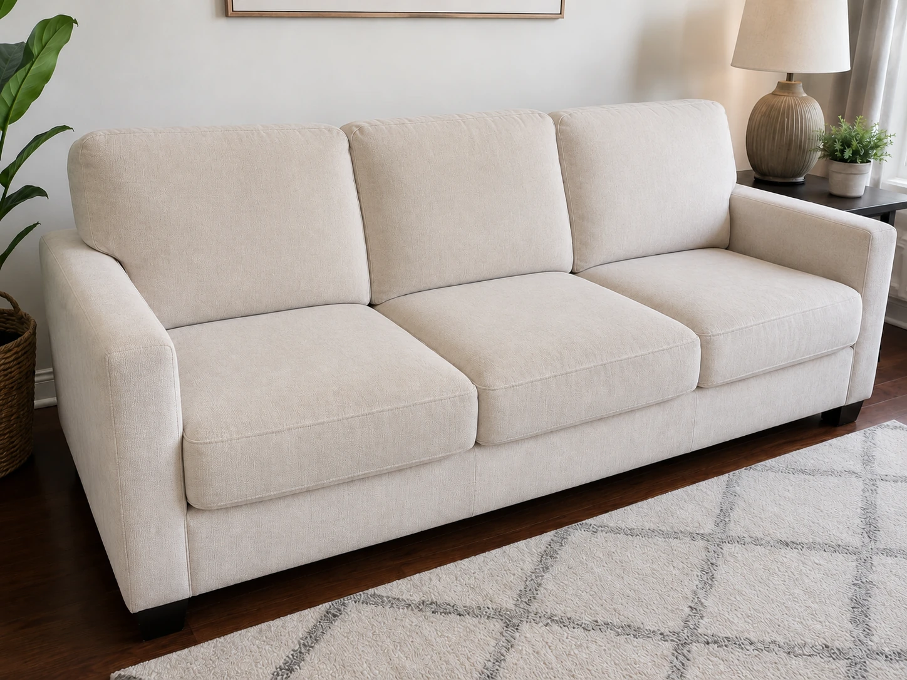

SawaraEntreprise
77 552 64 19
Devis WhatsApp
WhatsApp
Votre canapé est taché, vos tapis dégagent une mauvaise odeur ou vos enfants y jouent toute la journée ? Sawara Entreprise intervient à domicile à Dakar avec une machine Kärcher professionnelle injection-extraction. Devis gratuit sur WhatsApp, réponse en moins de 2 heures.

La poussière sahélienne, les enfants qui jouent au sol, les repas pris en famille sur le canapé — à Dakar, les textiles d'intérieur s'encrassent vite. L'hivernage aggrave les choses en humidifiant les fibres et favorisant le développement d'acariens et de moisissures invisibles à l'oeil nu.
Café, jus, transpiration, odeurs d'hivernage. Ce que vous sentez dans un tissu vient souvent de l'intérieur des fibres, pas de la surface.
Les canapés et tapis concentrent les acariens. Toux, éternuements, irritations — les enfants et personnes allergiques y sont particulièrement sensibles.
Au Sénégal, le salon est le coeur de la maison. Visites, repas, enfants, prières — le canapé et le tapis sont sollicités tous les jours.
La saison sèche charge les fibres de particules fines impossibles à enlever à l'aspirateur ordinaire. L'injection-extraction les extrait en profondeur.
La machine Kärcher professionnelle injecte une solution détachante au coeur des fibres, puis aspire simultanément l'eau sale avec la saleté. Le tissu est traité en profondeur, pas seulement en surface.
Machine Kärcher professionnelle — référence mondiale injection-extraction
Même canapé, même angle. La différence parle d'elle-même.

Avant
AprèsSawara Entreprise intervient sur tous types de mobilier textile. Une seule intervention peut couvrir l'ensemble de votre salon ou chambre.
Velours, microfibre, lin, coton. Toutes tailles, toutes couleurs.
Produits spécifiques cuir. Nettoyage et protection des surfaces.
Grands tapis de salon, tapis berbères, moquettes, kilims et descentes de lit.
Anti-acariens, anti-taches. Idéal pour chambres enfants et hôtels.
Sièges de bureau, fauteuils de salon, chaises de salle à manger.
Nettoyage sur place ou après dépose selon le type de tissu.
Sawara Entreprise vient chez vous avec tout l'équipement nécessaire. Vous n'avez rien à déplacer, rien à préparer.
Envoyez une photo de ce que vous souhaitez nettoyer. Réponse avec tarif en moins de 2 heures.
On fixe un créneau selon vos disponibilités. Intervention possible en journée ou en soirée.
Le technicien arrive avec la machine et les produits. Application de la solution détachante, puis extraction.
2 à 4 heures selon le type de tissu et l'aération. En saison sèche à Dakar, souvent moins.
Le technicien vous indique comment entretenir vos textiles entre deux interventions professionnelles.
Sawara Entreprise intervient dans toute la région dakaroise et au-delà selon les besoins.